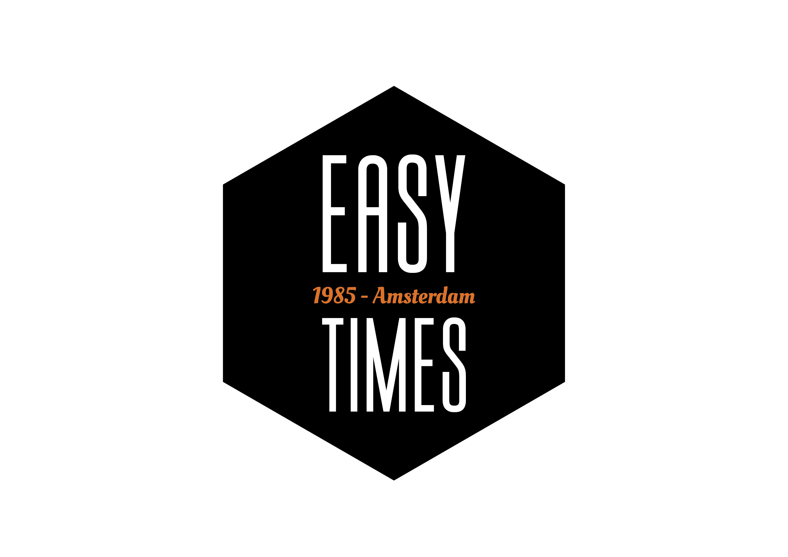

⬅ Back to Home

Top 10 Things to Do in Amsterdam
Scan the QR code to access exclusive Amsterdam experiences.
×
🧡 Bonus: Add the same orange border to background if you want: Add this CSS inside your